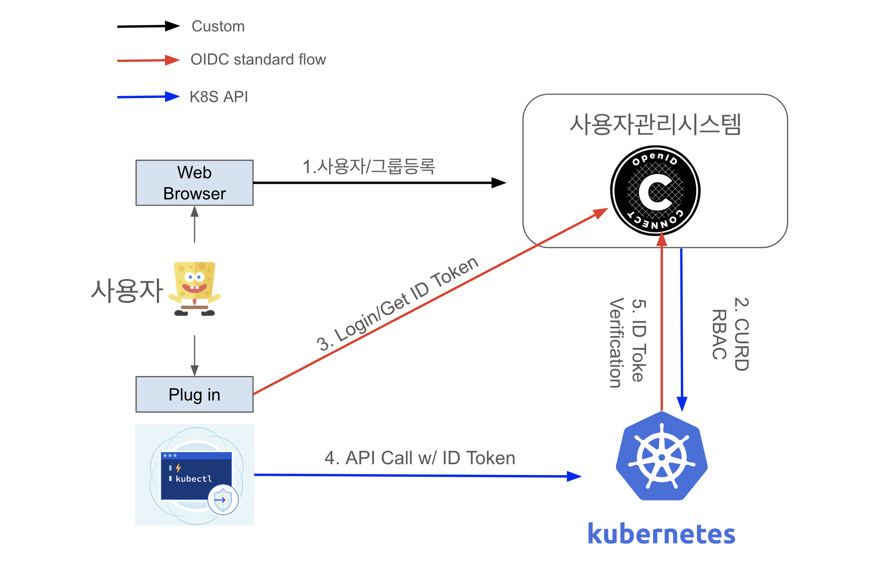

14장. 쿠버네티스를 위한 역할 기반 접근 제어
역할 기반 접근 제어(Role-Base Access Control) 는 쿠버네티스 API에 대한 접근과 작업을 모두 제한하여 적절한 사용자만 접근할 수 있게 하는 메커니즘을 제공
-> 사용자가 실수로 시스템을 다운시키는 사고를 방지
쿠버네티스의 모든 요청은 우선 인증이 필요
ㄴ 쿠버네티스에는 사용자 식별을 위한 ID 저장소가 없음
ㄴ 외부 인증 제공자를 활용
ㄴ 자체 로그인 기능을 제공하지 않아서, 네이버 로그인과 같은 소셜 로그인을 활용하는 것

(https://devocean.sk.com/blog/techBoardDetail.do?ID=165823&boardType=techBlog)
“AWS IAM (인증 제공자) + 자체 쿠버네티스” 를 활용한다고 가정
관리자가 AWS IAM 에서 사용자 A 를 추가
사용자 A 에게 특정 역할을 부여하기 위해 쿠버네티스에 RoleBinding 추가
사용자 A 가 AWS 로그인을 통해 Authentication 수행
ID Token 을 통해 Authorization 수행
올바르게 인증되면 요청을 수행할 권한이 있는지 여부 파악
역할 기반 접근 제어
쿠버네티스에서의 ID
쿠버네티스에 대한 모든 요청은 일부 ID와 관련이 있음
쿠버네티스는 사용자 ID와 서비스 계정 ID를 구분
ㄴ 서비스 계정: 쿠버네티스 자체에서 생성 및 관리. 클러스터 내에서 실행되는 컴포넌트와 연결
ㄴ 사용자 계정: 클러스터의 실제 사용자와 관련된 다른 모든 계정. 클러스터 외부에서 실행되는 CD 서비스와 같은 자동화를 포함
쿠버네티스는 인증 제공자를 위한 일반적인 인터페이스를 사용
ㄴ X509 클라이언트 인증서, AWS IAM 같은 클라우드 인증 제공자, 인증 웹훅 등
클러스터 내의 서로 다른 애플리케이션에 대해 항상 다른 ID를 사용해야 함
ㄴ 운영 프론트엔드 / 운영 백엔드 / 개발 프론트엔드 / 개발 백엔드 각각 다른 시스템 ID
ㄴ 쿠버네티스 시스템 계정 혹은 ID 시스템에서 제공하는 파드 ID 제공자 (애저 액티브 디렉토리)를 사용
역할과 역할 바인딩의 이해
요청의 ID를 알고 나면, 요청을 수행한 사용자에게 요청에 대한 권한이 있는지 판별할 때,
역할과 역할 바인딩을 사용
쿠버네티스에서의 역할과 역할 바인딩
네임스페이스에만 적용되는 역할과 역할 바인딩 (Role, RoleBinding)
Role 리소스는 단일 네임스페이스 내에서의 권한을 나타낸다.
역할에 RoleBinding을 바인딩하는 것은 네임스페이스 내에서 권한을 제공하는 것
역할 생성
# role.yaml
kind: Role
apiVersion: rbac.authorization.k8s.io/v1
metadata:
namespace: default
name: pod-and-services
rules:
- apiGroups: [""]
resources: ["pods", "services"]
verbs: ["create", "delete", "get", "list", "patch", "update", "watch"]
리소스 각각 verb를 지정하는 방법
# role.yaml
kind: Role
apiVersion: rbac.authorization.k8s.io/v1
metadata:
namespace: default
name: pod-and-services
rules:
- apiGroups: [""]
resources: ["pods"]
verbs: ["create", "delete", "get", "list", "patch", "update", "watch"]
- apiGroups: [""]
resources: ["services"]
verbs: ["create", "delete", "get", "list", "patch", "update", "watch"]
kubectl apply -f role.yaml
역할 바인딩 생성
# rolebinding.yaml
kind: RoleBinding
apiVersion: rbac.authorization.k8s.io/v1
metadata:
namespace: default
name: pod-and-services
subjects:
- apiGroup: rbac.authorization.k8s.io
kind: User
name: alice
- apiGroup: rbac.authorization.k8s.io
kind: Group
name: mydevs
roleRef:
apiGroup: rbac.authorization.k8s.io
kind: Role
name: pod-and-services
kubectl apply -f role.yaml
kubectl apply -f rolebinding.yaml
클러스터에 적용되는 역할과 역할 바인딩 (ClusterRole, ClusterRoleBinding)
클러스터 전체에 적용되는 역할
쿠버네티스 역할을 위한 동사
동사 |
HTTP 메서드 |
설명 |
|---|---|---|
create |
POST |
새로운 리소스 생성 |
delete |
DELETE |
기존의 리소스 삭제 |
get |
GET |
리소스 획득 |
list |
GET |
리소스의 모음 조회 |
patch |
PATCH |
부분 변경을 통한 기존 리소스 수정 |
update |
PUT |
완전한 객체를 통한 기존 리소스 수정 |
watch |
GET |
리소스에 대한 업데이트 스트리밍 확인 |
proxy |
GET |
스트리밍 웹 프록시를 통해 리소스에 연결 |
내장돼 있는 역할 사용
kubectl get clusterroles
일반 사용자용으로 설계
cluster-admin: 전체 클러스터에 대한 완전한 접근 권한 제공
admin: 모든 네임스페이스에 대한 완전한 접근 권한 제공
edit: 네임스페이스에 있는 리소스를 수정할 수 있는 권한 제공
view: 네임스페이스에 대한 읽기 전용 접근 권한 제공
시스템 유틸리티를 위해 설계
system:node
system:kube-dns
…
kubectl describe clusterrole admin
{kind=link}
내장돼 있는 역할의 자동 조정
쿠버네티스 API 서버가 재시작될 때마다, 기본 ClusterRole을 자동으로 설치
언제 문제가 되는가?
developer 역할을 정의할 때, pod의 get 및 list 권한만 부여
Kubernetes의 향후 업데이트에서 기본 ClusterRole에 pod의 create, delete 권한이 포함되도록 변경
이에 따라 developer 역할에 새로운 create, delete 권한이 추가되어, developer 권한을 가진 사용자가 pod를 생성하거나 삭제할 수 있게 됨
rbac.authorization.kubernetes.io/autoupdate 애노테이션의 값을 false로 설정!
RBAC을 관리하기 위한 기술
can-i를 통한 권한 부여 테스트
kubectl auth can-i create pods
특정 사용자가 특정 작업을 수행할 수 있는지 테스트하는데 사용
--subresource 같은 플래그를 활용하여 하위 리소스(ex. 특정 파드의 로그) 권한도 테스트 가능
소스 컨트롤에서 RBAC 관리
YAML 형식으로 모델링되기 때문에, 책임·감사·롤백 등을 위해 버전 관리 시스템에 저장하는 것이 유리
kubectl auth reconcile -f role.yaml
kubectl auth reconcile -f rolebinding.yaml
고급 주제
클러스터 역할 조합
여러 가지 역할을 조합해 하나의 역할로 정의할 필요성이 있음
모든 규칙을 copy & paste 하는 방식은 한 ClusterRole의 변경 사항이 자동 반영이 되지 않음
쿠버네티스 RBAC은 여러 ClusterRole을 조합해 새로운 역할을 만들 수 있는 조합 규칙을 지원
일반 Role은 조합이 안 되는 듯
라벨 셀렉터 (aggregationRule 필드의 clusterRoleSelector 필드) 를 사용해 ClusterRole을 명시
# role.yaml
kind: Role
apiVersion: rbac.authorization.k8s.io/v1
metadata:
namespace: default
name: pod-and-services
aggregationRule:
clusterRoleSelectors: pod-and-services
- matchLabels:
rbac.authorization.k8s.io/aggregate-to-edit: "true"
바인딩을 위한 그룹 사용
특정 ID에 바인딩을 개별적으로 추가하는 것이 아닌, 그룹에 바인딩
이점 1: 대규모 조직에서 클러스터에 대한 접근 권한은 특정 ID가 아닌 누군가가 속한 팀이라는 용어로 정의됨
이점 2: 관리의 단순성와 일관성
참고
쿠버네티스 내에서 그룹에 대한 개념은 존재하지 않음
그룹은 인증 제공자에 의해 제공됨